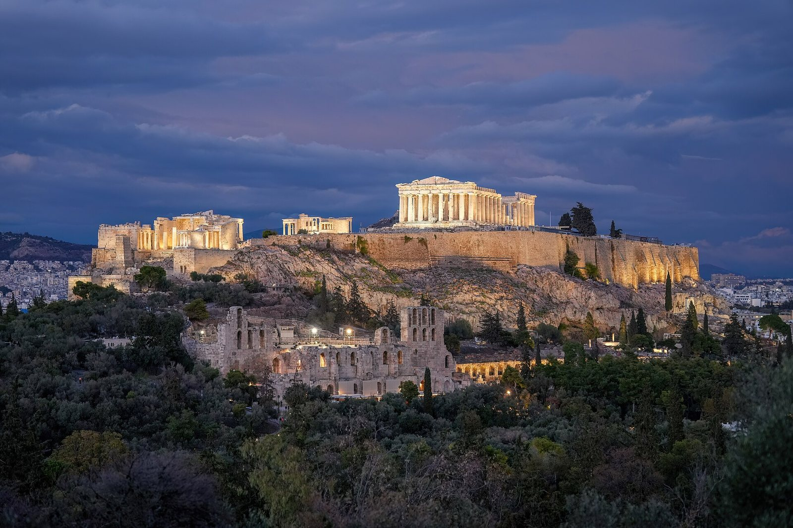
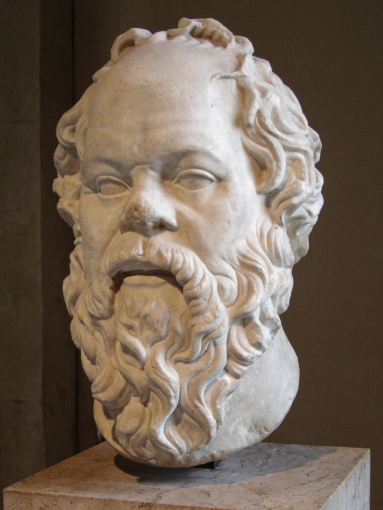
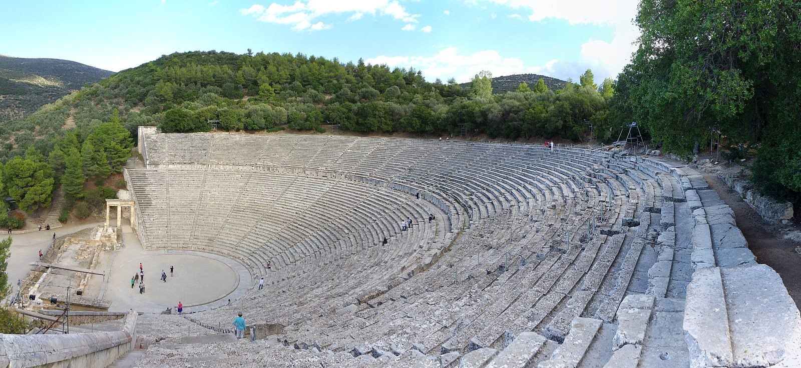
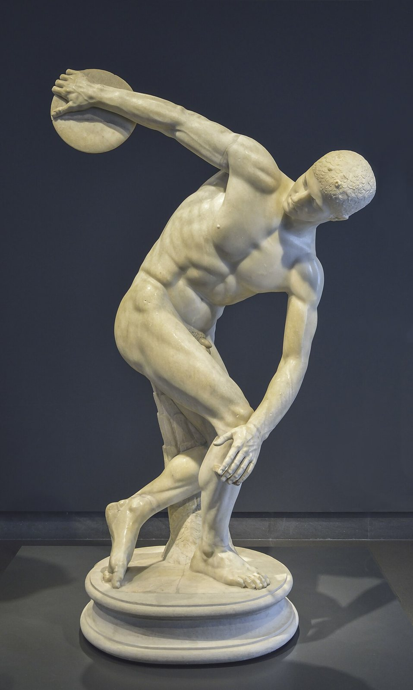
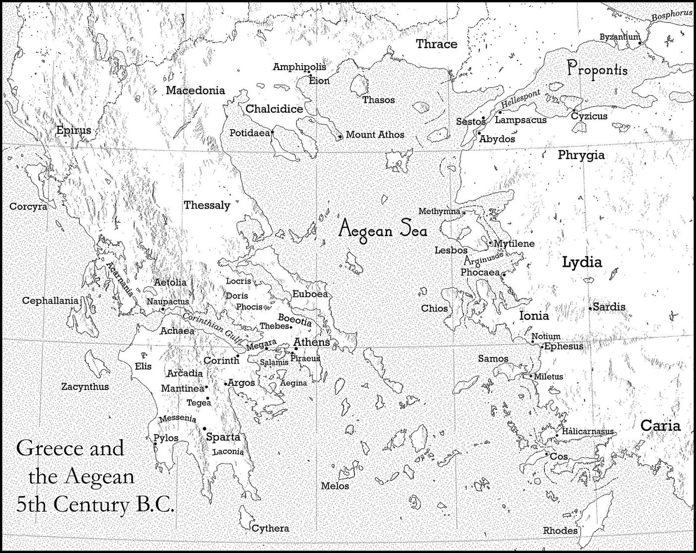
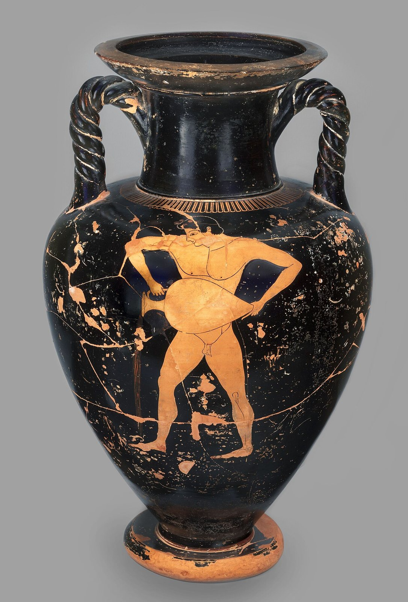
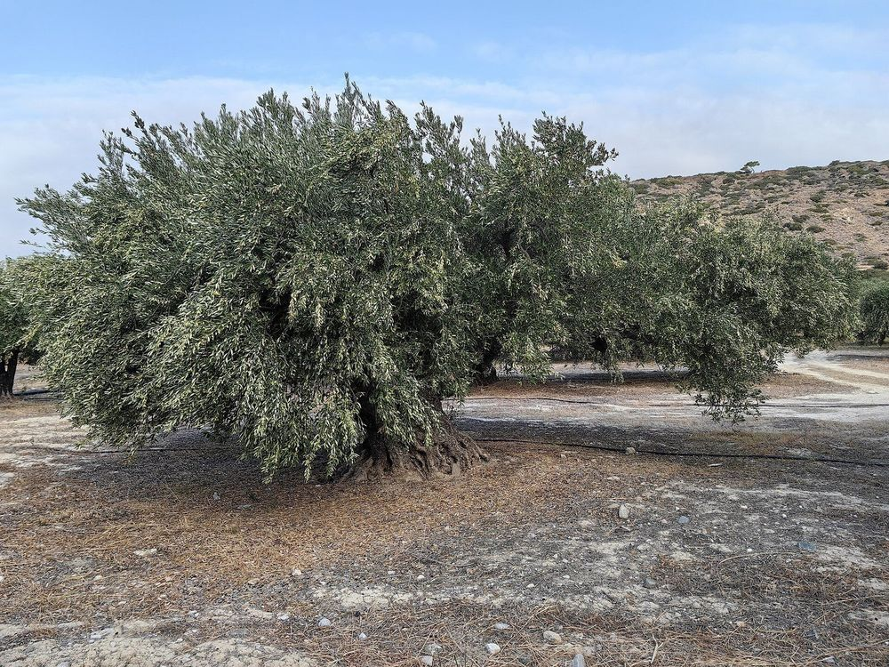

Эратосфен
ок. 240 г. до н. э.
Измерил окружность Земли по тени — с точностью до двух процентов.
ΑΘΗΝΑΙ • ΕΛΛΑΣ • 431 π.Χ.
Η ΕΛΛΑΣ • ΕΦΗΜΕΡΙΣ
ГАЗЕТА ДРЕВНЕГО МИРА
ΑΘΗΝΑΙ • ΠΟΛΙΣ
Двести пятьдесят тысяч жителей, один Акрополь и идея, которая пережила империи.
Как маленький полис придумал политику, философию и театр — и почему мы до сих пор говорим его словами.

Η ΕΛΛΑΣ • ΑΘΗΝΑΙ
ГАЗЕТА ДРЕВНЕГО МИРА
↓ нажмите, чтобы развернуть
Выпуск № 1 • 431 г. до н. э.
Η ΕΛΛΑΣ
ГАЗЕТА ДРЕВНЕГО МИРА
«Познай самого себя» — надпись у входа в храм Аполлона в Дельфах
ΑΘΗΝΑΙ • ΠΟΛΙΣ
Двести пятьдесят тысяч жителей, один Акрополь и идея, которая пережила империи. Как маленький полис придумал политику, философию и театр — и почему мы до сих пор говорим его словами.
В 508 году до н. э. афинянин Клисфен сделал то, что до него не решался никто: разделил граждан не по знатности, а по месту жительства. Так родилась демократия — власть демоса, народа. На центральной площади, Агоре, любой свободный гражданин мог поднять руку и сказать своё слово. Решения принимало собрание, а не царь и не жрец.
Афины V века — это не только политика. Это Парфенон, построенный за пятнадцать лет; это трагедии Софокла, которые смотрели тысячи людей; это Сократ, гулявший по рынку и задававший неудобные вопросы. Город жил войной и торговлей, спорил о богах и законах — и в этих спорах придумывал себя.
«Власть народа» — дословно: κράτος τοῦ δήμου. Греки придумали не только слово, но и привычку спорить о том, как устроена власть.
Демократия была несовершенной: женщины, рабы и переселенцы не голосовали. Но сама мысль, что власть можно делить и обсуждать, оказалась сильнее любых стен. Через две с половиной тысячи лет мы всё ещё разворачиваем эту газету.
ΕΠΙΣΤΗΜΗ
В III веке до н. э. Эратосфен Киренский заметил: в полдень в Сиене, сегодняшнем Асуане, солнечный свет падает в колодец отвесно, а в Александрии тот же столб отбрасывает тень под углом 7,2°. Расстояние между городами он знал. Оставалась арифметика: 7,2° — это 1/50 окружности. Умножив путь на 50, Эратосфен получил около 39 400 км. Современное значение — 40 075 км. Ошибка — меньше двух процентов.
Греки не разделяли науку и философию: одно слово — «эпистеме» — означало и знание, и умение. Они спорили, из чего состоит мир (Демокрит сказал: из атомов), как движутся планеты (Аристарх предположил, что вокруг Солнца), и почему болит голова (Гиппократ искал причину в природе, а не в гневе богов).
Самое поразительное — Антикитерский механизм. Бронзовый ящик с тридцатью шестернями, поднятый со дна моря в 1901 году, предсказывал солнечные и лунные затмения, фазы Луны и положение планет. Это не астрология: это математика, воплощённая в металле.
окружность Земли по Эратосфену. Современное значение — 40 075 км.
ок. 240 г. до н. э.
Измерил окружность Земли по тени — с точностью до двух процентов.
ок. 270 г. до н. э.
Первым поставил Солнце в центр мира — за 1800 лет до Коперника.
ок. 400 г. до н. э.
Придумал атомы: неделимые частицы, из которых состоит всё.
287–212 гг. до н. э.
Сформулировал закон рычага и закон плавучести; изобрёл винт и военные машины.
ок. 400 г. до н. э.
Отделил медицину от религии: у болезни есть природная причина.
ок. 300 г. до н. э.
Собрал геометрию в «Начала» — учебник, по которому учились две тысячи лет.
ΤΕΧΝΗ • ΤΕΧΝΟΛΟΓΙΑ
Пифагор и Аристотель приводили доказательства: тень Земли на Луне круглая.
Герон Александрийский построил эолипил — прообраз парового двигателя.
Тот же Герон придумал устройство, которое продавало святую воду за монету.
В Эфесе дома обогревались горячим воздухом под полом — гипокауст.
Водяные часы с сигналом приписывают Платону. Утро начиналось по расписанию.
Герофил и Эрасистрат описали нервы и мозг, вскрывая тела в Александрии.
ΦΙΛΟΣΟΦΙΑ
“Я знаю, что ничего не знаю.
Сократ, по свидетельству Платона

Сократ не написал ни строки. Он ходил по Агоре и спрашивал: что такое справедливость? что такое добро? почему ты думаешь, что знаешь? Его ученик Платон записал эти разговоры — и придумал мир идей, где всё земное лишь тень совершенного. Ученик Платона Аристотель пошёл дальше: он не искал идеальный мир, а начал описывать этот — животных, растения, государства, театр.
В 387 году до н. э. Платон основал Академию — первую в Европе школу, где учили не ремеслу, а мышлению. В 335 году Аристотель открыл Ликей. Греки не отделяли философию от жизни: этика была практикой, а счастье — не чувством, а делом.
Философия родилась не в храме, а на рынке. Она была разговором, спором, вопросом без готового ответа. Поэтому она и работает до сих пор.
Сократ: справедливость — когда каждый делает своё дело и не мешает другим. Платон: справедливое государство — то, где правит мудрость, а не сила.
Сократ, ПлатонАристотель: счастье — это деятельность души, согласная с добродетелью. Не подарок судьбы, а работа.
АристотельЭпикур: удовольствие — это отсутствие страдания. Зенон: жить согласно природе. Диоген: не зависеть от вещей.
Эпикур, Зенон, ДиогенΘΕΑΤΡΟΝ • ΑΓΩΝ

ΕΠΙΔΑΥΡΟΣ • IV ВЕК ДО Н. Э.
Четырнадцать тысяч мест. Акустика такова, что с последнего ряда слышно, как актёр шепчет. Греки объясняли это гармонией пропорций; современные акустики — отражением звука от каменных скамей.
Театр родился из ритуала в честь Диониса. На Великих Дионисиях показывали трагедии и комедии; победителя выбирали зрители. Эсхил, Софокл, Еврипид и Аристофан писали для одного праздника — и создали язык, на котором театр говорит до сих пор.
Актёры играли в масках, чтобы голос звучал громче, а лицо становилось общим для всех. В одном актёре могло быть несколько ролей; женщинам играть было нельзя. Но именно на этой сцене впервые прозвучали вопросы, которые мы задаём себе каждый день: что такое судьба? можно ли ей сопротивляться? кто виноват — человек или боги?
мест в Эпидавре
дня главного праздника
актёра на сцене — уже событие
ΟΛΥΜΠΙΑ • 776 г. до н. э.
Первые Олимпийские игры прошли в 776 году до н. э. в Олимпии. На время игр объявляли экехейрию — священное перемирие: войны останавливались, чтобы атлеты могли добраться до святилища. Победитель получал не золото, а венок из ветвей дикой оливы. Но его имя высекали на камне — и он становился героем на всю жизнь.
Бег, прыжок, метание копья и диска, борьба — пентатлон. Гонки на колесницах, кулачный бой, панкратион. Женщины к играм не допускались, но для них устраивали отдельный праздник — Герайи.
Хроника игр и полисов →
год первых игр
дней длились игры
зрителей собиралось в Олимпии
денежных призов — только слава
ΧΡΟΝΟΣ
Двенадцать поворотов истории — от дворцов Крита до римского Коринфа. Прокрутите хронику вбок: время здесь идёт слева направо.
Крит, дворцы Кносса, фрески с дельфинами, линейное письмо А. Первая великая культура Эгеиды.
Львиные ворота, золото Трои, цари-воины. Микенский мир, который позже вспомнит Гомер.
«Илиада» и «Одиссея»: устная поэзия становится книгой, а миф — литературой.
Начало греческого календаря. Победитель получает оливковый венок и бессмертие в стихах.
Граждан делят по демам, а не по знатности. Рождение афинской демократии.
Афиняне побеждают персов. Гонец бежит в Афины с вестью — и становится легендой.
Триста спартанцев и их союзники держат узкий проход. Флот Фемистокла громит персов у Саламина.
Акрополь получает новый силуэт. Иктин и Калликрат строят храм Афины Парфенос.
Афины против Спарты. Тридцать лет войны, чума и конец афинского века.
Философа приговаривают к чаше цикуты. Он мог бежать — но выбрал закон.
Империя от Греции до Индии. Греческий язык и греческие города — от Египта до Афганистана.
Греция становится римской провинцией. Но Рим влюбляется в греческую культуру — и увозит её с собой.

ΓΕΩΓΡΑΦΙΑ • ГЕОГРАФИЯ
Афины, Спарта, Коринф, Фивы, Аргос, Милет, Эфес. У каждого — свои законы, боги и армия. Их объединяли язык, мифы и Олимпийские игры. Враждовать и чувствовать себя одним народом — это тоже греческое изобретение.
ΒΙΟΣ
Дом среднего афинянина был скромным: глинобитные стены, внутренний двор, очаг. Зато общественная жизнь кипела на улице. Утром — рынок и Агора, днём — суд или собрание, вечером — симпосий: пир с вином, музыкой и разговорами. Вино разбавляли водой — пить неразбавленным считалось варварством.
Оливки, хлеб, сыр, рыба, инжир, мёд. Мясо — по праздникам. Одежда — хитон и гиматий, без штанов: их считали варварской одеждой. Женщины жили в гинекее, но в Спарте — иначе: спартанки получали образование, владели землёй и славились остроумием.
Греки придумали не только демократию, но и слово «школа» (σχολή — досуг), «музыка», «гимназия», «стадион», «театр», «история», «геометрия», «атом», «космос», «политика». Огромная часть нашего словаря — это греческие корни.
День афинянина
Лепёшка, вода из колодца, петухи и первые новости соседей.
Агора: рынок, судебные тяжбы, споры о политике и ценах.
Народное собрание, суд присяжных или гимнасий — по расписанию.
Симпосий: разбавленное вино, флейта и разговоры до рассвета.


Слова, которые пришли из Греции
ΑΓΓΕΛΙΕΣ • Объявления
Продаётся амфора с изображением Геракла. Торг у Пирейских ворот.
Ищу философа для ежедневных бесед. Оплата — обедом и вниманием.
Корабль в Милет отходит на рассвете. Места у борта ещё есть.
Пропала сандалия, левая. Особые приметы: ремешок. Награда — оливка.
Сдаётся дом с видом на Акрополь. Без шума по вечерам.
Осторожно: софист. Не спорьте с ним о справедливости — он умеет говорить.
ΚΛΗΡΟΝΟΜΙΑ • НАСЛЕДИЕ
Греция не исчезла. Она осталась в словах, которыми мы говорим, в театрах, куда мы ходим, в судах, где мы спорим, в стадионах, где мы болеем, и в привычке задавать вопрос «а почему?». Двадцать пять веков назад несколько тысяч человек в маленьком полисе решили, что мир можно обсуждать. С тех пор ничего принципиально не изменилось — только масштаб.
лет демократии
буквы в греческом алфавите
идея: человек в центре мира
«Человек — мера всех вещей»
Протагор
ΔΕΛΦΟΙ • ДЕЛЬФЫ
ΓΝΩΘΙ ΣΑΥΤΟΝ
«Познай самого себя»
Надпись у входа в храм Аполлона в Дельфах. Прежде чем спрашивать о будущем, загляните внутрь себя.
Оракул говорит загадками. Толковать — вам.